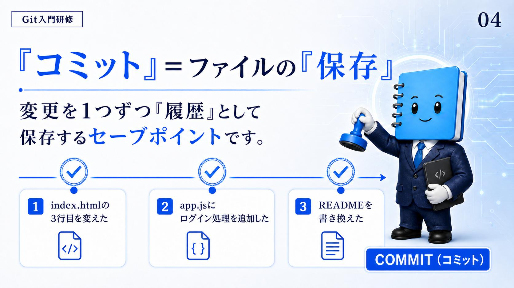

『コミット』＝ファイルの『保存』
資料はコミットを、ゲームの言葉で言い換える。変更を1つずつ『履歴』として保存するセーブポイント。「保存」と等号で結んでいるので身構えなくていいが、ふつうの上書き保存と決定的に違うところが1つある——1つずつという部分。
資料が並べているのは、次の3つのコミット。
index.html の3行目を変えた
1つ目のセーブポイント。
app.js にログイン処理を追加した
2つ目のセーブポイント。
README を書き換えた
3つ目のセーブポイント。
3つの作業をまとめて1回保存するのではなく、作業の区切りごとに1つ置いていく。こうしておくと、あとから履歴を読んだときに「この時点で何をしたか」が1行で分かる。

確認
資料がコミットの例として挙げている3つは、どんな単位で置かれているか。
- 1日の作業を終業時にまとめて1回
- ファイルを新しく作ったときだけ1回
- 「3行目を変えた」「ログイン処理を追加した」のような、作業の区切りごとに1つずつ
答え: C — 3つの作業をひとまとめにするのではなく、区切りごとにセーブポイントを置いていく。
資料が「変更を1つずつ」と書いているのはこの部分。
コミットの手前にある待機場所 — git add
スライドはコミットを「保存」とだけ説明していて、その手前の段には触れていません。ただ、実際に手を動かすと必ず通る段なので、この学習ノートでは1節だけ足しています。以下はスライドの内容ではありません。
git add は、ファイルの変更や新しく作ったファイルを、次のコミット（履歴の記録）の準備状態＝ステージングエリアへ登録するコマンド。コミットが「保存」なら、その直前にある「何を保存するか選ぶ」段にあたる。
変更の選択
編集したファイルの中から、履歴に残したいものだけを選んで登録できる。
ステージング
コミットする直前の「待機場所」にデータを送り、記録の準備をする。
ローカルでの完結
この操作は自分のパソコン内だけで行われ、GitHub などのリモートサーバーにはまだ送信されない。
作業ツリー ステージングエリア 履歴
（編集した状態） ──add──▶（待機場所） ──commit──▶（セーブポイント）
ここまで全部ローカル。リモートへ送るのは、このあとの PUSH。
この節の前で見たとおり、資料はコミットを変更を1つずつ置くものとして説明していた。3つの作業を別々のセーブポイントに分けられるのは、登録するものを選べる段が手前にあるから。git add は、その「1つずつ」を実際に成り立たせている操作にあたる。
add もコミットも、動いているのは自分のパソコンの中だけ。チームが見られる場所に出るのは、04 の PUSH を通ってから。手元で何度 add と commit を繰り返しても、リモートには何も届いていない。
確認
git add を済ませた時点で、その変更はどこまで届いているか。
- チームが見られるクラウド上の保管場所まで届いている
- 自分のパソコンの中の待機場所まで。リモートには何も送られていない
- プロジェクトの本線に取り込まれるところまで進んでいる
答え: B — この操作はローカルで完結する。リモートに出るのは、あとに続く別の操作を通ってから。
待機場所に置くことと、記録すること、そして送ることは、それぞれ別の段になっている。
main とは何か？
資料は main を「本番の出し物」と呼ぶ。定義としてはプロジェクトの公式の最新版で、性格としては確認された完成形を置く場所。そして、はっきり否定文が付く——みんなが自由に書き換える場所ではありません。
資料が main に与えている決まりは2つ。
main は壊さない
公式の最新版なので、壊れた状態を置いてはいけない。
main はいつでも動く状態にする
誰がいつ見に来ても動く、という状態を保つ。
スライドでは、台の上でスポットライトを浴びている main の隣に、「未完成」と書かれたドラフトが4枚床に転がっている。未完成のものは main に置かない、という線引きがそのまま絵になっている。では未完成のものはどこで書くのか——それが次の回のブランチ。
確認
資料の説明からすると、作りかけの変更を main に直接置くのが避けられるのはなぜか。
- main は容量が小さく、大きな変更を受け取れないから
- main は確認された完成形を置く場所で、いつでも動く状態に保つと決めているから
- main には1日に1回しか変更を入れられない決まりがあるから
答え: B — 公式の最新版であることと、いつでも動く状態にすること。この2つが理由になっている。
資料は「みんなが自由に書き換える場所ではありません」とも明記している。
まとめ
コミットは変更を1つずつ刻むセーブポイント。その手前に待機場所（ステージングエリア）があり、main は公式の最新版として壊さずに保つ。
ここまでで「履歴をどう刻むか」と「刻んだものが最後にどこへ集まるか」が決まった。残るのは、完成する前の作業をどこで進めるか。次の回でブランチとマージを見る。